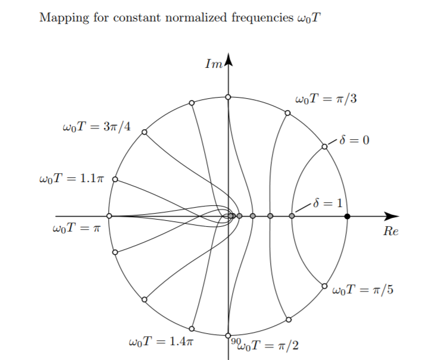
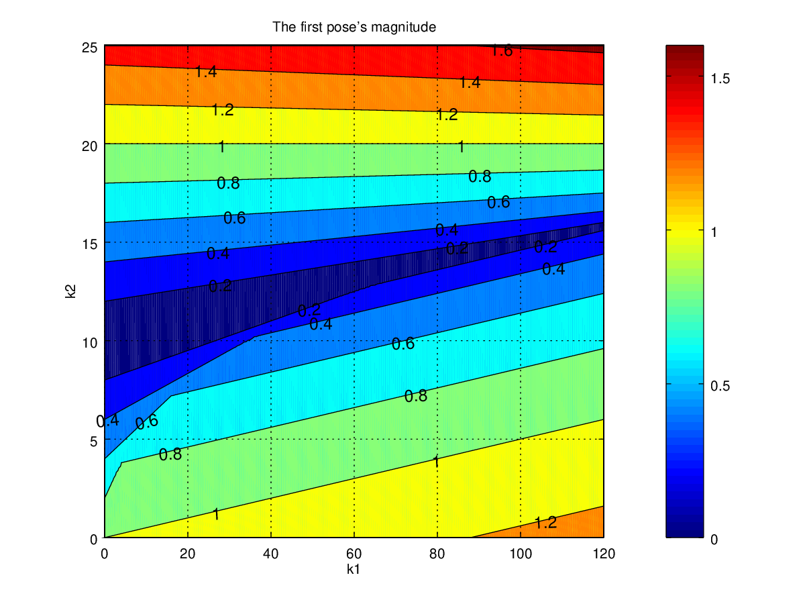
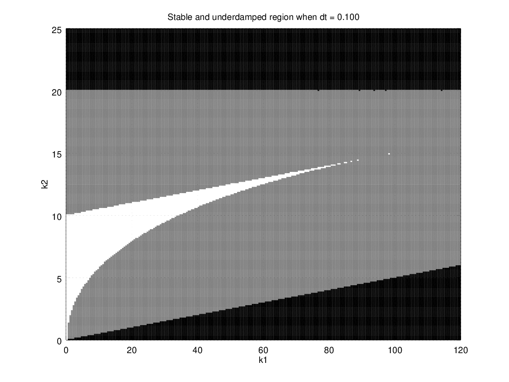

Second-order System and Its Control
Table of Contents
1 Goals
- Figure out the connection between a full-state feedback system dynamics and the mechanical system mechanics
- Figure out the connection between the feedback \(K\) and the time response
- Figure out the way to find the best \(K\)
2 Continuous-time Second Order System and Its Control
The continuous-time dynamics of interest is
\begin{eqnarray*} x_{next} &=& \begin{bmatrix} 0 & 1 \\ 0 & 0 \end{bmatrix} x + \begin{bmatrix} 0 \\ 1 \end{bmatrix} u \end{eqnarray*}We are particularly interested in a full-state feedback controller, such as \[ u = - K x \]
where \(K := [k_1 \; k_2]\), \(k_1\) and \(k_2\) is the feedback control gains. Such control is often called PD control, where \(k_1\) is the P (Proportional) gain, and \(k_2\) is the D (Derivative) gain.
Hereafter, we will study the closed-loop dynamics of such dynamics. It is interesting because we will find many systems in the real life have such dynamics, such as to control the position by controlling the acceleration, and etc.
The closed-loop system dynamics is determined by the eigenvalues of the state transition matrix: \(T := A - B K\). \[ T = \left[\begin{matrix}0 & 1\\- k_{1} & - k_{2}\end{matrix}\right] \] and its eigenvalues are (see Appendix 1): \[ \left[\begin{matrix}- \frac{k_{2}}{2} - \frac{\sqrt{- 4 k_{1} + k_{2}^{2}}}{2}\\- \frac{k_{2}}{2} + \frac{\sqrt{- 4 k_{1} + k_{2}^{2}}}{2}\end{matrix}\right] \]

Figure 1: Second-order mechanical system
Now let's look at a mass-spring-damper mechanics system as shown in Fig. 1. it's poles are given by \[ \left[\begin{matrix}- \frac{b}{2m} - \frac{\sqrt{- 4 mk + b^{2}}}{2m}\\- \frac{b}{2m} + \frac{\sqrt{- 4 mk + b^{2}}}{2m}\end{matrix}\right] \]
Compared with these two equations, we will find that the closed-loop feedback system dynamics is equivalent to the mass-spring-damper system as shown in Fig. 1, where \[ k = k_1 m \] \[ b = k_2 m \]
The damping radio \(\xi\) and natural frequency \(\omega_n\) of the mechanical system are given by: \[ \omega_n = \sqrt{\frac{k}{m}}\] and \[ \xi = \frac{b}{2\sqrt{km}} \]
Therefore, the damping radio \(\xi\) and natural frequency \(\omega_n\) in term of \(k_1\) and \(k_2\) are given by: \[ \omega_n = \sqrt{k_1} \] and \[ \xi = \frac{k_2}{2\sqrt{k_1}} \]
This can explain why the higher the P gain, the faster it oscillates. The higher the D gain, the faster it decays.
There are four classes of pole locations in term of the feedback gains 1:
- First, if \(\xi= 0\), the system is undamped, it will oscillate at natural frequency.
- If \(0 < \xi < 1\), the system is underdamped.
- If \(\xi = 1\), the system is critically damped.
- Finally, \(\xi > 1\), the system is overdamped.
For mass-spring-damper system, it is easy to prove that the magnitudes of eigenvalues are always negative. Therefore, it is always stable.
3 Discrete-time second Order System and Its Control
The discrete time dynamics of interest is
\begin{eqnarray*} x_{next} &=& \begin{bmatrix} 1 & dt \\ 0 & 1 \end{bmatrix} x + \begin{bmatrix} \frac{1}{2} dt^2 \\ dt \end{bmatrix} u \\ u &=& - \begin{bmatrix} k_1 & k_2 \end{bmatrix} x \end{eqnarray*}The closed-loop system dynamics (aka Homogeneous DE) becomes (see Appendix 2 for octave code): \[ x_{next} = (A - B K) x \] The system response is determined by the poles of \(A - B K\), which are: \[ \lambda_1 = 1 - \frac{dt^{2} k_{1}}{4} - \frac{dt k_{2}}{2} - \frac{\sqrt{dt^{2} \left(dt^{2} k_{1}^{2} + 4 dt k_{1} k_{2} - 16 k_{1} + 4 k_{2}^{2}\right)}}{4} \]
\[ \lambda_2 = 1 - \frac{dt^{2} k_{1}}{4} - \frac{dt k_{2}}{2} + \frac{\sqrt{dt^{2} \left(dt^{2} k_{1}^{2} + 4 dt k_{1} k_{2} - 16 k_{1} + 4 k_{2}^{2}\right)}}{4} \]

Figure 2: Mapping for constant normalized frequencies \(\omega_n T\)

Figure 3: Mapping for constant damping \(\xi\)

Figure 4: Pole in z-plane and its time response
Refer to 2
The stability of the closed-loop system is determined by the magnitudes of both eigenvalues.

Figure 5: the first pole's magnitude when \(T=0.1\)

Figure 6: the second pole's magnitude when \(T=0.1\)

Figure 7: the second pole's \(\theta\) when \(T=0.1\)

Figure 8: Black is unstable region, gray is stable w/ oscillate region, and white is stable w/o oscillation region when \(T=0.1\).

Figure 9: Regions with different time step. Black is unstable region, gray is stable w/ oscillate region, and white is stable w/o oscillation region.

Figure 10: Gains, poles and time response when \(T=0.1\)
4 Appendix 1
Octave code to calculate poles in s-plant
pkg load symbolic syms a1 a2 a3 a4; A = [a1, a2; a3 a4] syms b1 b2; B = [b1;b2] syms k1 k2; K = [k1 k2] T = [A-B*K] T = subs(T, a1, 0) T = subs(T, a2, 1) T = subs(T, a3, 0) T = subs(T, a4, 0) T = subs(T, b1, 0) T = subs(T, b2, 1) eig(T)
5 Appendix 2
Octave code to calculate poles in s-plant
pkg load symbolic; syms a1 a2 a3 a4 b1 b2 k1 k2 dt A = [a1 a2; a3 a4] B = [b1; b2] K = [k1 k2] T = A - B * K; T = subs(T, a1, 1) T = subs(T, a2, dt) T = subs(T, a3, 0) T = subs(T, a4, 1) T = subs(T, b1, dt^2/2) T = subs(T, b2, dt) simplify(eig(T))